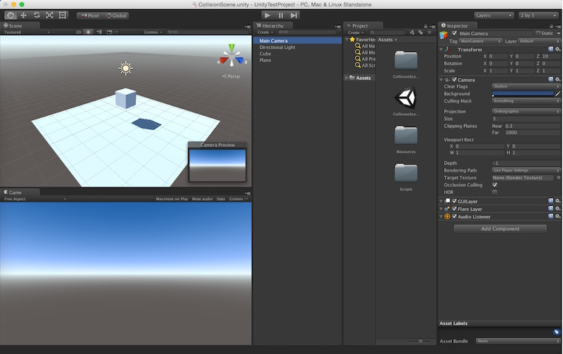
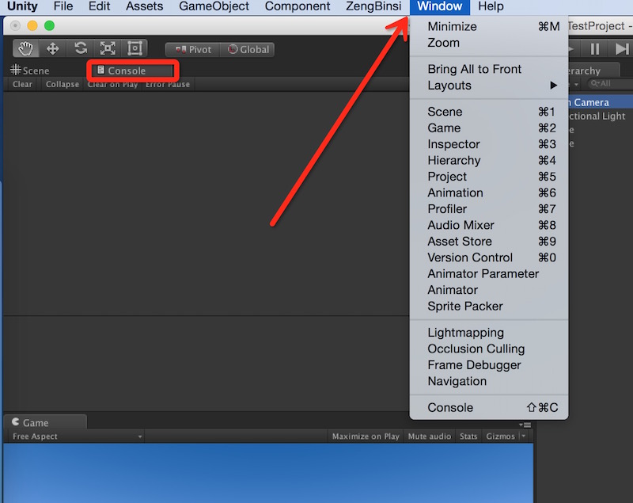

打开Unity编辑器的主窗口，在窗口的右上角可以看到有个“Layout”按钮。这是用来对Unity编辑器主窗口上面的各个窗口面板进行布局的。通常情况下我个人比较习惯使用“2 by 3”的布局方式，所以，我会将Layout设置成该布局。

然后我们可以看到如上图所示的布局。
该布局在主窗口左边竖排两个面板，从上到下分别是“Scene”和“Game”。
除了左边的两个面板，在主窗口的右边还水平横排三个面板，从左往右依次是“Hierarchy”面板、“Project”面板和“Inspector”面板。
除了这五个常用的视图面板之外，Unity还有很多的窗口帮助我们更好的进行开发。我们可以在Unity顶部的菜单栏上面找到“Window”选项，然后点击我们需要的视图面板即可打开。通常我会将Console（控制台）视图面板放在Scene视图的位置，方便我在运行游戏时查看日志信息。

（其实首次接触Unity 3D这个引擎是2014年的7月份，当时见到它就挺喜欢的，只是因为某些原因一直没有去了解它。最近正好开始想要去学习这个深受开发者喜爱的引擎，便想写点东西作为记录，以备后面查询。）